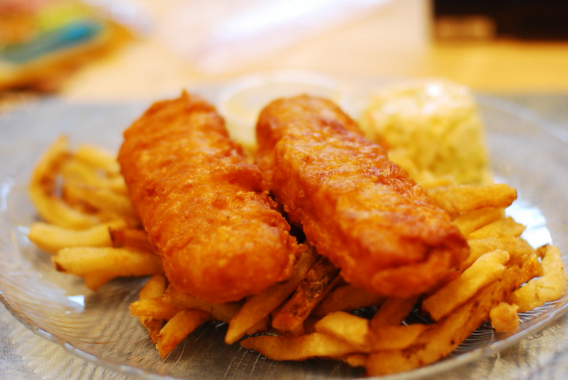

Fish and Chips

Description
A classic British dish consisting of battered and fried fish served with chips (fries).
Often served with tartar sauce and malt vinegar. Popular in the UK and Ireland as well as other parts of Europe and in the Middle East.
Ingredients
- 4 fish fillets (e.g., cod or haddock)
- 1 cup all-purpose flour
- 1 tsp salt
- 1/2 tsp black pepper
- 1/2 tsp paprika
- 1 egg, beaten
- 1 cup vegetable oil for frying
- 1 lb potatoes, cut into chips
Steps
- Preheat the oven to 200°C (400°F).
- Cut the potatoes into chip shapes and toss with a little salt and pepper.
- Bake the chips in the oven for 20-25 minutes, or until golden brown.
- In a bowl, mix the flour, salt, pepper, and paprika.
- Dip each fish fillet in the beaten egg, then coat with the flour mixture.
- Heat the vegetable oil in a deep frying pan over medium heat.
- Fry the fish until golden brown on both sides.
Back to Recipes List